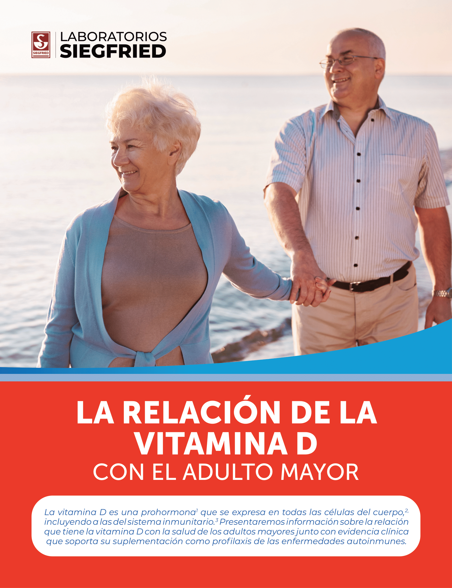

Editorización-Dinamica
|  |
|
La vitamina D es un secosteroide y una prohormona1 liposoluble2 vA la forma inactiva de este nutriente se le conoce como colecalciferol, la cual requiere de dos hidroxilaciones diferentes para ser activada, una en el hígado para convertirse en calcidiol o 25 hidroxicolecalciferol (25(OH)D o 25(OH)D3) y otra en el riñón para que el calcidol se metabolice en calcitriol o 1-alfa,25-dihidroxicolecalciferol (1,25(OH)2D o 1,25(OH)2D3).2 Precisamente, el parámetro más utilizado para medir la cantidad de vitamina D en el organismo son los niveles de 25(OH)D en la sangre, siendo normales las concentraciones >30 ng/mL y óptimas las concentraciones >40 ng/mL.4 Las concentraciones inferiores a 20 ng/mL representan una deficiencia nutricional.1,4 La vitamina D tiene muchas funciones comprobadas dentro del organismo que son posibles gracias a su influencia en el curso de algunos procesos metabólicos básicos.5 Las más conocidas son su papel en la mineralización ósea Question 1 ¿Qué niveles séricos de 25 hidroxicolecalciferol (25(OH)D) representan una deficiencia nutricional?
¿Qué efecto tienen los estrógenos sobre la vitamina D?
y en la regulación del calcio y sus efectos en la prevención de enfermedades como el raquitismo y la osteoporosis.3,5 No obstante, se ha comprobado que todos los tejidos y todas las células del cuerpo tienen un receptor de vitamina D, por lo que su deficiencia, además de estar asociada con la fisiopatología de las enfermedades ya mencionadas, también puede afectar otras funciones del organismo.2 Algunas de las células en las que se expresa la forma activa de la vitamina D son las del sistema inmunitario.3 Esto, sumado con el hecho de que se han encontrado deterioros en el sistema inmunitario de pacientes con deficiencia de vitamina D, ha contribuido a que se comience a estudiar la relación entre este nutriente, los procesos de dicho sistema y la aparición de enfermedades autoinmunes. Se ha comprobado que los adecuados niveles de vitamina D en la sangre son los que determinan la secreción de citoquinas antiinflamatorias y de otros elementos reguladores del sistema inmunitario.5 Asimismo, se ha evidenciado que la 1,25(OH)2D al unirse al receptor de la vitamina D (VDR, por sus siglas en inglés) inhibe la diferenciación y la proliferación de los linfocitos B y Th, lo cual genera que se pase de un estado inmunitario inflamatorio a uno más tolerante.1 De igual manera, se ha encontrado que la deficiencia de vitamina D fomenta las respuestas que promueven la inflamación y altera el equilibrio de la actividad antiinflamatoria en el sistema inmunitario.5 Todas estas cuestiones han hecho que nazca la idea de que las respuestas inmunitarias varían en función de la disponibilidad de 25(OH)D y de que la deficiencia de vitamina D está relacionada con la fisiopatología de enfermedades autoinmunes.3 |
Estudios han demostrado que la suplementación con vitamina D tiene beneficios en la actividad patológica de la artritis reumatoide, puede reducir la frecuencia de las úlceras gástricas en pacientes con esclerosis sistémica y reduce el daño asociado a la superficie ocular de pacientes con síndrome de Sjögren primario.2 Question 2 ¿Qué grupo etario se ve favorecido por la vitamina D y por qué?
¿Qué efecto tienen los estrógenos sobre la vitamina D?
Un factor que puede afectar tanto los efectos de la vitamina D en el organismo como el riesgo de padecer una enfermedad autoinmune es el género.6 Esto se debe a la presencia de estrógenos y a la manera que tiene esta hormona de interactuar con la forma activa de la vitamina D. Se ha evidenciado que el estradiol puede disminuir la expresión del gen CYP24A1, lo cual a la larga lleva a una acumulación de vitamina D que desencadena una respuesta inmunitaria más potente en mujeres que en hombres. De hecho, se suelen encontrar niveles más altos de 25(OH) D en las mujeres y se ha establecido una relación directamente proporcional entre los niveles de este nutriente y de estradiol. Además, estudios han sugerido que el uso clínico de la vitamina D en pacientes con enfermedades autoinmunes como la artritis reumatoide puede tener mejores resultados en las mujeres que en los hombres.6 Question 3 Los pacientes de la tercera edad con deficiencia de vitamina D son especialmente vulnerables a desarrollar:
Deficiencia de vitamina D en adultos mayores
La deficiencia de vitamina D es una problemática global, particularmente prevalente en la población de adultos mayores.7 Ellos suelen presentar niveles inferiores a los óptimos de vitamina D debido a su baja ingesta de este micronutriente y a su reducida exposición a la luz ultravioleta.7 Esto quiere decir que son un grupo etario especialmente vulnerable a las condiciones de salud que pueden surgir a raíz de la insuficiencia o deficiencia de la vitamina D. La vitamina D desempeña un rol clave en la modulación de la función inmunitaria, con importantes consecuencias en el mantenimiento de la salud y la aparición de enfermedades, en particular los trastornos autoinmunitarios.6 La evidencia sobre el efecto inmunomodulador de la 25(OH) D y el papel de la deficiencia y la suplementación |
|
de vitamina D en las enfermedades autoinmunes se han estudiado durante mucho tiempo.2 Los niveles séricos bajos de 25(OH)D se han asociado a un mayor riesgo de aparición de enfermedades autoinmunes y a una mayor actividad de ese tipo de enfermedades.6 Algunas de las condiciones que han sido asociadas con la deficiencia de 25(OH) D son la artritis reumatoide, el lupus eritematoso sistémico, la artritis psoriásica, la esclerosis sistémica y la enfermedad inflamatoria intestinal.2 Como se mencionó anteriormente, la vitamina D es crucial en el proceso de mineralización ósea y en la regulación del calcio,3, 5 por eso incide en la regulación y modulación de la fisiología y las funciones del sistema musculoesquelético.7 A medida que avanzan el tiempo y la edad de las personas, la situación de equilibrio del calcio se deteriora, lo que hace imperativo mantener un aporte adecuado de este mineral.8 Sin embargo, es necesario conservar también unos niveles óptimos de vitamina D que modulen el calcio que ingresa al organismo. De hecho, en personas de edad avanzada la menor actividad física ya es responsable de un 6 % de pérdida ósea, pero cuando la dieta de ellos es deficiente en calcio y vitamina D se produce un 16 % adicional de pérdida de hueso.8 Una de las enfermedades que las personas mayores son más susceptibles de padecer es la sarcopenia, una afección clínica asociada a la edad que se caracteriza por la pérdida progresiva de masa musculoesquelética con reducción de la fuerza muscular y el rendimiento físico.7 Es un gran factor de riesgo de eventos adversos, como el delirio, la discapacidad y la muerte.7 Varios estudios han demostrado, en personas mayores, que los niveles séricos de vitamina D están relacionados de forma independiente con la pérdida de masa muscular y la disminución de la fuerza muscular, lo que sugiere que las personas mayores con deficiencia de vitamina D están extremadamente expuestas a desarrollar sarcopenia.7 Por otro lado, los niveles bajos de vitamina D se asocian a casos más graves de osteoartritis de rodilla.9 En un estudio transversal se encontró que hubo más casos graves de osteoartritis (56,6 %) en pacientes ancianos con insuficiencia o deficiencia de vitamina D (p = 0,04).9 Adicionalmente, los individuos con deficiencia o insuficiencia de vitamina D presentaron una puntuación más alta en el índice de Lequesne (prueba de MannWhitney, p = 0,04) en comparación con los pacientes con niveles suficientes de vitamina D (véase la figura 1), lo que indicó un mayor deterioro funcional en los pacientes con deficiencia o insuficiencia de vitamina D.9 |
Debido a que la vitamina D es una hormona pleotrópica que modula las respuestas inflamatorias sistémicas y del sistema nervioso central, los pacientes con deficiencia de vitamina D pueden ser especialmente vulnerables al deterioro cognitivo a largo plazo tras una enfermedad aguda.10 De hecho, un estudio desarrollado por Evans y colegas determinó que la deficiencia de vitamina D se asoció con una peor cognición a los seis meses en pacientes adultos de edad avanzada con enfermedades agudas ingresados a urgencias que estaban cognitivamente intactos al inicio del estudio (véase la figura 2).10 |
|
Suplementación de vitamina D como profilaxis de las
enfermedades autoinmunes
Así como la deficiencia de vitamina D contribuye a la aparición de enfermedades autoinmunes, su suplementación ha demostrado ser eficaz al prevenirlas. VITAL fue un estudio estadounidense, aleatorizado, doble ciego, controlado con placebo y con un diseño factorial de dos por dos que se realizó con el fin de investigar si la vitamina D y los ácidos grasos omega 3 reducen el riesgo de enfermedades autoinmunes En dicho estudio 25 871 pacientes (12 786 hombres mayores de 50 años y 13 085 mujeres mayores de 55 años) fueron aleatorizados en cuatro grupos para recibir vitamina D o su respectivo placebo o ácidos grasos omega 3 o su respectivo placebo y se les hizo seguimiento durante una media de 5,3 años.11 El criterio de valoración primario fue la cantidad de pacientes con enfermedad autoinmune confirmada al finalizar dicho seguimiento (véase la figura 3). Question 4 ¿Para qué sirve la profilaxis con vitamina D? |
La suplementación con vitamina D redujo significativamente el riesgo de presentar enfermedades autoinmunes en comparación con el ácido graso omega 3 (22 % vs. 15 %).11 En definitiva, a los ya conocidos efectos de la vitamina D sobre la homeostasis del calcio y los huesos hay que sumarle una estrecha relación con el sistema inmunitario y unos potentes efectos inmunomoduladores de su forma activa (1,25-(OH)2D).3 Su deficiencia está asociada con la fisiopatología de enfermedades autoinmunes2 y con el deterioro de la capacidad cognitiva en los adultos mayores.10 Por eso, su suplementación es crucial para prevenir deficiencias nutricionales que puedan ocasionar la aparición de condiciones que deterioren el sistema musculoesquelético, el inmunitario o la capacidad cognitiva. |
1. Lemke D, Klement RJ, Schweiger F, Schweiger B, Spitz J. Vitamin D Resistance as a Possible Cause of Autoimmune Diseases: A Hypothesis Confirmed by a Therapeutic High-Dose Vitamin D Protocol. Front Immunol. 2021; 12:655739. 2. De Martinis M, Allegra A, Sirufo MM, Tonacci A, Pioggia G, Raggiunti M et al. Vitamin D Deficiency, Osteoporosis and Effect on Autoimmune Diseases and Hematopoiesis: A Review. Int J Mol Sci. 2021;22(16):8855. 3. Harrison SR, Li D, Jeffery LE, Raza K, Hewison M. Vitamin D, Autoimmune Disease and Rheumatoid Arthritis. Calcif Tissue Int. 2020;106(1):58-75. 4. Vásquez-Awad D, Cano CA, Gómez A, Ángel M, Guzmán R, Martínez JI et al. Vitamina D. Consenso colombiano de expertos. Med [Internet]. Abril - junio de 2017 [citado el 14 de septiembre de 2022];39(2). Disponible en: http://www.aapec.org/images/Consenso_Colombiano_Vitamina_D.pdf 5. Wiśniewska A, Szypowska A. The role of vitamin D in selected autoimmune diseases. Rocz Panstw Zakl Hig. 2021;72(2):111-121. 6. Dupuis ML, Pagano MT, Pierdominici M, Ortona E. The role of vitamin D in autoimmune diseases: could sex make the difference? Biol Sex Differ. 2021;12(1):12. 7. Remelli F, Vitali A, Zurlo A, Volpato S. Vitamin D Deficiency and Sarcopenia in Older Persons. Nutrients [Internet]. 2019;11(12):2861. Disponible en: https://www.ncbi.nlm.nih.gov/pmc/articles/PMC6950416/ 8. Casals JL, Panero P, Moreno F, Fernández MJ. Necesidades de calcio y vitamina D en ancianos con osteoporosis. SEMERGEN. 2006;32(2):63-67. 9. Montemor CN, Fernandes MTP, Marquez AS, Poli-Frederico RC, da Silva RA, Fernandes KBP. Vitamin D deficiency, functional status, and balance in older adults with osteoarthritis. World J Clin Cases. 2021;9(31):9491-9499. 10. Evans CS, Self W, Ginde AA, Chandrasekhar R, Ely EW, Han JH. Vitamin D Deficiency and Long-Term Cognitive Impairment Among Older Adult Emergency Department Patients. West J Emerg Med. 2019;20(6):926-930. 11. Hahn J, Cook NR, Alexander EK, Friedman S, Walter J, Bubes V et al. Vitamin D and marine omega 3 fatty acid supplementation and incident autoimmune disease: VITAL randomized controlled trial. BMJ [Internet]. 2022; 376. Disponible en: https://www.ncbi.nlm.nih.gov/pmc/articles/PMC8791065/?report=printable
|
Laboratorios Siegfried S. A. S |
|